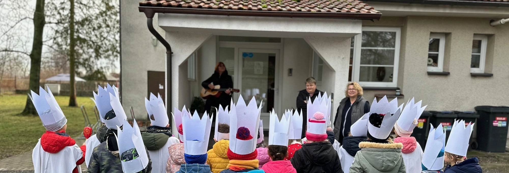
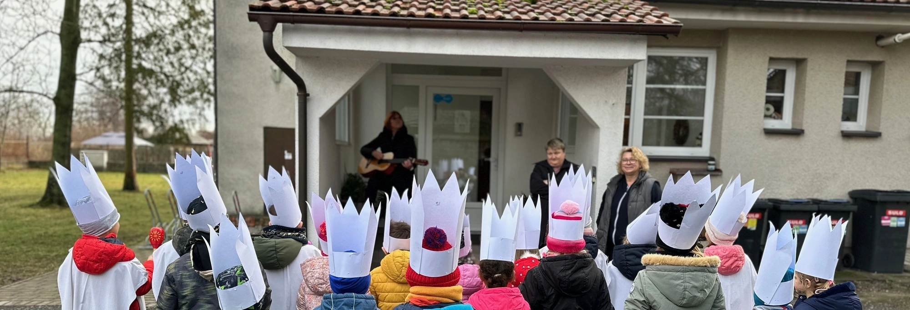

Organizace školního roku
Školní rok 2023/2024 začne 4. září 2023. V období podzimních, vánočních, pololetních, jarních, velikonočních a letních prázdnin, vyhlášených MŠMT pro základní školy, a v období ředitelského volna vyhlášeného ředitelkou ZŠ Kostomlaty nad Labem, bude mateřská škola zjišťovat zájem zákonných zástupců o docházku dětí do MŠ z důvodu závazného nahlášení stravy vzhledem k omezenému provozu školní jídelny v ZŠ.
Přerušení provozu proběhne ve dnech:
23.12.2023 - 2.1.2024 (Provoz bude zahájen 3.1.2024)
5.8.2024 - 30.8.2024 (Provoz bude zahájen 2.9.2024)
Adaptační plán
Adaptace je náročná nejenom pro dítě, ale také pro rodiče, děti Vaše emoce vycítí a reagují na ně, proto vystupujte přívětivě, ale rozhodně.
V MŠ dodržujte pravidla společně s dítětem. K sezení využívejte koberec.
První den ve školce
Pokud je to možné, mělo by dítě svůj první den v MŠ projít se svým rodičem. Seznamte dítě s prostory MŠ. Uložte podepsaný hrneček na tác umístěný u vstupu u kuchyně. Společně s dítětem najdete židličku, na které bude sedět při jídle.
V umývárně je třeba vyzkoušet velikost toalety, pokud je toaleta pro dítě moc vysoko, upozorněte na to prosím učitelky. Nechte dítě vyzkoušet pustit vodu a vypnout ji a najít ručník
Zbytek týdne
Do MŠ můžete vstupovat s dítětem, odcházejte prosím nejdéle v 8:30 hod. (vždy než odejdete, informujte učitelku). Dítě v MŠ doporučujeme ponechávat maximálně dvě hodiny.
Další dny
V průběhu září můžete vstupovat do MŠ a zůstávat do 8:30 hod., od října děti vstupují do třídy bez rodičů. Dobu pobytu prodlužujte postupně po hodině, pak do oběda. Dobu pobytu nikdy nenavyšujeme po víkendu nebo po vynechaném dni.
Co si přinést do školy
Náhradní oblečení:
- Spodní prádlo
- Ponožky
- Tričko
- Tepláky
Oblečení na pobyt venku:
- Bunda, mikina
- Tepláky, kraťasy
- Pokrývka hlavy
- Pláštěnka
Oblečení na pobyt ve třídě a tělocvičně:
- Bačkory s pevnou patou
- Cvičky s bílou podrážkou
- Pyžamo
Věci pro pobyt ve školce:
- Hrneček na pitný režim
- Zubní pasta a kartáček
Pravidla pro návštěvy
Práce dětí i pedagogů v naší školce v systému Začít spolu s Montessori prvky je specifická. Aby mohla probíhat tak, jak jsou děti zvyklé, prosíme vás o dodržování následujících pravidel.
- Protože se děti pohybují volně v prostoru, sedněte si na židli pro dospělé nebo na zem.
- Pokud vás bude ve třídě více dospělých, omezte rozhovory mezi sebou ve chvíli, kdy probíhá činnost.
- Děti během pobytu ve škole nekontaktujte. Pokud Vás dítě osloví, odpovězte mu, avšak ani na jeho výzvu nevstupujte do jeho práce.
- Pomůcky a hračky se Vám jistě budou líbit, avšak během pobytu ve školce s dětmi je neberte do rukou,ani s nimi nepracujte.
- Osobní věci dětí, jako jsou zásuvky, portfolia nebo rozdělaná práce, bez svolení dětí neprohlížejte.
- Během pobytu ve školce děti nefotografujte.
- Pokud se rozhodnete opustit třídu a poté se do ní vrátit, učiňte tak co nejvíce potichu a nenápadně.
Desatero předškoláka
Materiál pro PV, č.j.MSMT-9482/2012-22
V rámci příprav materiálu Konkretizované očekávané výstupy RVP PV vzešel, na základě četných dotazů rodičů, také návrh materiálu popisující základní požadavky pro děti předškolního věku, který by mohli využít rodiče.
Vstup do první třídy základní školy představuje pro dítě velkou životní změnu. Mění se role dítěte, prostředí, dospělí i vrstevníci, denní program, náplň činnosti, nároky i požadavky.
Aby dítě mohlo zvládnout tuto náročnou situaci bez vážnějších problémů, mělo by být nejen dostatečně vývojové a sociálně zralé, ale také dobře připravené. Materiál nabízí rodičům dětí předškolního věku základní informace toho, co by mělo jejich dítě zvládnout před vstupem do základní školy. Jsou zde zachyceny jak výchovné, tak vzdělávací předpoklady. Je třeba mít ale na zřeteli, že zrání dítěte je nerovnoměrné, že každé dítě nemusí všech parametrů dosáhnout, ale může se k nim přiblížit. Přehled základních dovedností propojuje a sjednocuje cíle rodiny a školy.
Proto je velmi důležitá spolupráce rodiny a školy, která se podílí na vzdělávání dítěte.
Desatero předškoláka
Desatero předškoláka naleznete pod následujícím odkazem: Desatero předškoláka